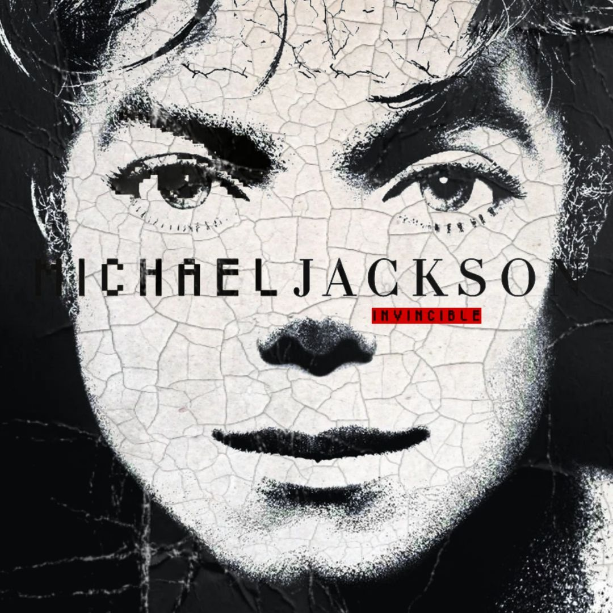
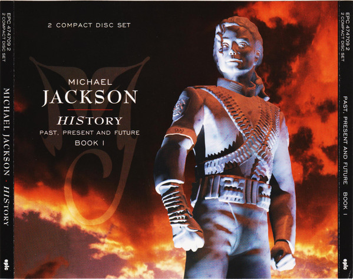
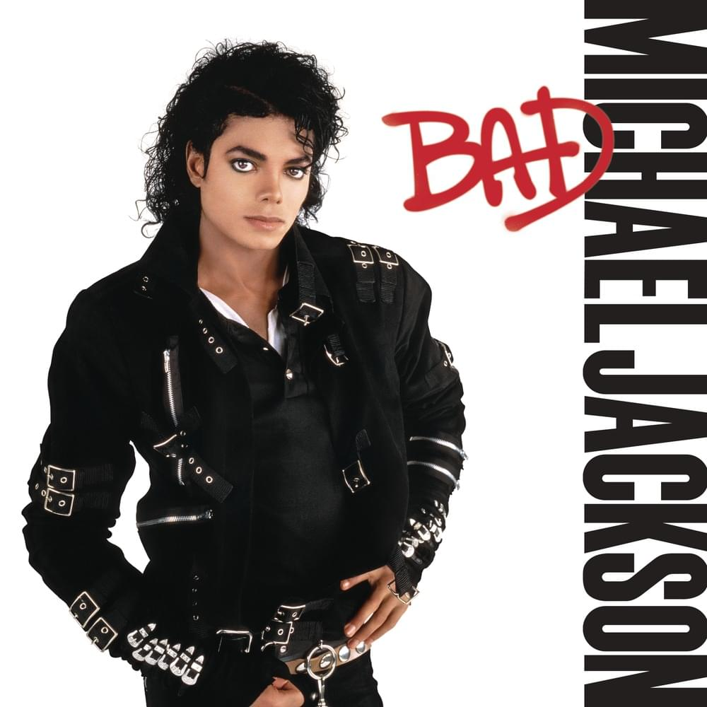
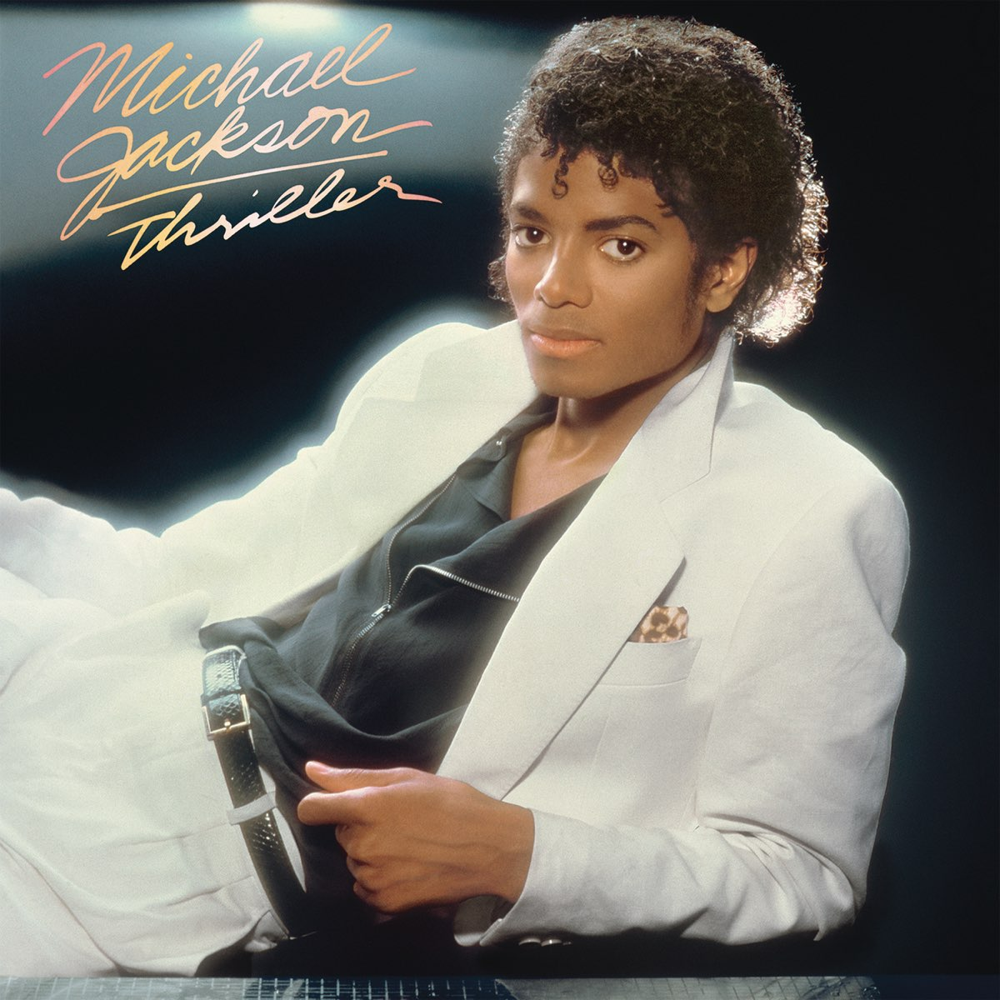
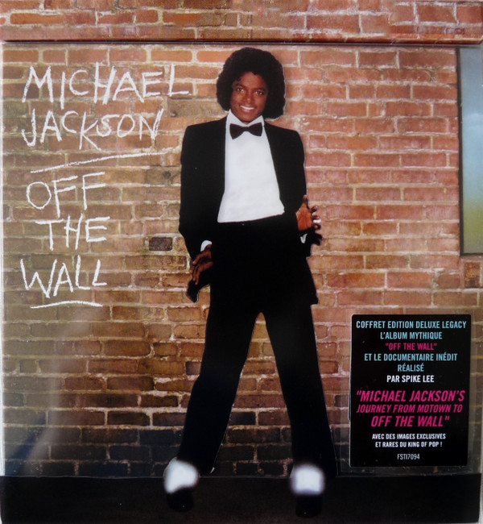

2001
Invincible
Álbum número 10 de Michael Jackson, lanzado en 2001. Incluye 16 canciones, con sencillos como "You Rock My World"
$100.000Discografia, informacion biografica y contenido exclusivo. Incorporamos una nueva seccion con contenido especial para nuestros fans, ahora puedes hacer una videollamada de 15min con Michael Jackson y conocer a tu artista favorito. ¡Reserva Ya tu turno!
¡Reserva Ya!¡Reserva tu turno para una videollamada exclusiva de 15min con Michael Jackson!
¡Reserva Ahora!
Álbum número 10 de Michael Jackson, lanzado en 2001. Incluye 16 canciones, con sencillos como "You Rock My World"
$100.000
Álbum número 9 de Michael Jackson, lanzado en 1995 contiene dos discos el primero HIStory Begins y el segundo disco HIStory Continues. Incluye 15 canciones cada disco, con sencillos como "Heal the World"
$115.000Álbum número 8 de Michael Jackson, lanzado en 1991. Incluye 14 canciones, con sencillos como "Black or White"
$90.000
Álbum número 7 de Michael Jackson, lanzado en 1987. Incluye 11 canciones, con sencillos como "Bad"
$80.000
Álbum número 6 de Michael Jackson, lanzado en 1982. Incluye 9 canciones, con sencillos como "Billie Jean"
$95.000
Álbum número 5 de Michael Jackson, lanzado en 1979. Incluye 10 canciones, con sencillos como "Don't Stop 'Til You Get Enough"
$75.000* Datos de contacto ficticios de su club de fans.